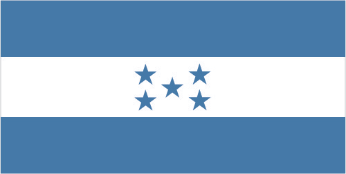

Central America and Caribbean :: HONDURAS
Introduction :: HONDURAS
-
Once part of Spain's vast empire in the New World, Honduras became an independent nation in 1821. After two and a half decades of mostly military rule, a freely elected civilian government came to power in 1982. During the 1980s, Honduras proved a haven for anti-Sandinista contras fighting the Marxist Nicaraguan Government and an ally to Salvadoran Government forces fighting leftist guerrillas. The country was devastated by Hurricane Mitch in 1998, which killed about 5,600 people and caused approximately $2 billion in damage. Since then, the economy has slowly rebounded.
Geography :: HONDURAS
-
Central America, bordering the Caribbean Sea, between Guatemala and Nicaragua and bordering the Gulf of Fonseca (North Pacific Ocean), between El Salvador and Nicaragua15 00 N, 86 30 WCentral America and the Caribbeantotal: 112,090 sq kmland: 111,890 sq kmwater: 200 sq kmcountry comparison to the world: 104slightly larger than Tennesseetotal: 1,575 kmborder countries (3): Guatemala 244 km, El Salvador 391 km, Nicaragua 940 km823 km (Caribbean Sea 669 km, Gulf of Fonseca 163 km)territorial sea: 12 nmcontiguous zone: 24 nmexclusive economic zone: 200 nmcontinental shelf: natural extension of territory or to 200 nmsubtropical in lowlands, temperate in mountainsmostly mountains in interior, narrow coastal plainsmean elevation: 684 melevation extremes: lowest point: Caribbean Sea 0 mhighest point: Cerro Las Minas 2,870 mtimber, gold, silver, copper, lead, zinc, iron ore, antimony, coal, fish, hydropoweragricultural land: 28.8%arable land 9.1%; permanent crops 4%; permanent pasture 15.7%forest: 45.3%other: 25.9% (2011 est.)900 sq km (2012)most residents live in the mountainous western half of the country; unlike other Central American nations, Honduras is the only one with an urban population that is distributed between two large centers - the capital of Tegucigalpa and the city of San Pedro Sula; the Rio Ulua valley in the north is the only densely populated lowland areafrequent, but generally mild, earthquakes; extremely susceptible to damaging hurricanes and floods along the Caribbean coasturban population expanding; deforestation results from logging and the clearing of land for agricultural purposes; further land degradation and soil erosion hastened by uncontrolled development and improper land use practices such as farming of marginal lands; mining activities polluting Lago de Yojoa (the country's largest source of fresh water), as well as several rivers and streams, with heavy metalsparty to: Biodiversity, Climate Change, Climate Change-Kyoto Protocol, Desertification, Endangered Species, Hazardous Wastes, Law of the Sea, Marine Dumping, Ozone Layer Protection, Ship Pollution, Tropical Timber 83, Tropical Timber 94, Wetlandssigned, but not ratified: none of the selected agreementshas only a short Pacific coast but a long Caribbean shoreline, including the virtually uninhabited eastern Mosquito Coast
People and Society :: HONDURAS
-
9,038,741note: estimates for this country explicitly take into account the effects of excess mortality due to AIDS; this can result in lower life expectancy, higher infant mortality, higher death rates, lower population growth rates, and changes in the distribution of population by age and sex than would otherwise be expected (July 2017 est.)country comparison to the world: 94noun: Honduran(s)adjective: Honduranmestizo (mixed Amerindian and European) 90%, Amerindian 7%, black 2%, white 1%Spanish (official), Amerindian dialectsRoman Catholic 46%, Protestant 41%, atheist 1%, other 2%, none 9% (2014 est.)Honduras is one of the poorest countries in Latin America and has the one of the world's highest murder rates. More than half of the population lives in poverty and per capita income is one of the lowest in the region. Poverty rates are higher among rural and indigenous people and in the south, west, and along the eastern border than in the north and central areas where most of Honduras' industries and infrastructure are concentrated. The increased productivity needed to break Honduras' persistent high poverty rate depends, in part, on further improvements in educational attainment. Although primary-school enrollment is near 100%, educational quality is poor, the drop-out rate and grade repetition remain high, and teacher and school accountability is low.Honduras' population growth rate has slowed since the 1990s, but it remains high at nearly 2% annually because the birth rate averages approximately three children per woman and more among rural, indigenous, and poor women. Consequently, Honduras' young adult population - ages 15 to 29 - is projected to continue growing rapidly for the next three decades and then stabilize or slowly shrink. Population growth and limited job prospects outside of agriculture will continue to drive emigration. Remittances represent about a fifth of GDP.0-14 years: 32.95% (male 1,521,300/female 1,456,727)15-24 years: 21% (male 968,013/female 930,060)25-54 years: 36.63% (male 1,675,574/female 1,635,241)55-64 years: 5.13% (male 218,342/female 245,447)65 years and over: 4.29% (male 167,957/female 220,080) (2017 est.)total dependency ratio: 59.8youth dependency ratio: 52.7elderly dependency ratio: 7.1potential support ratio: 14.2 (2015 est.)total: 23 yearsmale: 22.6 yearsfemale: 23.3 years (2017 est.)country comparison to the world: 1741.6% (2017 est.)country comparison to the world: 6622.4 births/1,000 population (2017 est.)country comparison to the world: 685.3 deaths/1,000 population (2017 est.)country comparison to the world: 184-1.1 migrant(s)/1,000 population (2017 est.)country comparison to the world: 142most residents live in the mountainous western half of the country; unlike other Central American nations, Honduras is the only one with an urban population that is distributed between two large centers - the capital of Tegucigalpa and the city of San Pedro Sula; the Rio Ulua valley in the north is the only densely populated lowland areaurban population: 55.9% of total population (2017)rate of urbanization: 2.85% annual rate of change (2015-20 est.)TEGUCIGALPA (capital) 1.123 million; San Pedro Sula 852,000 (2015)at birth: 1.05 male(s)/female0-14 years: 1.04 male(s)/female15-24 years: 1.04 male(s)/female25-54 years: 1.02 male(s)/female55-64 years: 0.88 male(s)/female65 years and over: 0.77 male(s)/femaletotal population: 1.01 male(s)/female (2016 est.)20.4 yearsnote: median age a first birth among women 25-29 (2011/12 est.)129 deaths/100,000 live births (2015 est.)country comparison to the world: 65total: 17.2 deaths/1,000 live birthsmale: 19.4 deaths/1,000 live birthsfemale: 14.8 deaths/1,000 live births (2017 est.)country comparison to the world: 95total population: 71.2 yearsmale: 69.5 yearsfemale: 72.9 years (2017 est.)country comparison to the world: 1512.67 children born/woman (2017 est.)country comparison to the world: 7073.2% (2011/12)8.7% of GDP (2014)country comparison to the world: 450.7 beds/1,000 population (2012)improved:urban: 97.4% of populationrural: 83.8% of populationtotal: 91.2% of populationunimproved:urban: 2.6% of populationrural: 16.2% of populationtotal: 8.8% of population (2015 est.)improved:urban: 86.7% of populationrural: 77.7% of populationtotal: 82.6% of populationunimproved:urban: 13.3% of populationrural: 22.3% of populationtotal: 17.4% of population (2015 est.)0.4% (2016 est.)country comparison to the world: 6921,000 (2016 est.)country comparison to the world: 75<1000 (2016 est.)degree of risk: highfood or waterborne diseases: bacterial diarrhea, hepatitis A, and typhoid fevervectorborne diseases: dengue fever and malarianote: active local transmission of Zika virus by Aedes species mosquitoes has been identified in this country (as of August 2016); it poses an important risk (a large number of cases possible) among US citizens if bitten by an infective mosquito; other less common ways to get Zika are through sex, via blood transfusion, or during pregnancy, in which the pregnant woman passes Zika virus to her fetus (2016)21.4% (2016)country comparison to the world: 897.1% (2012)country comparison to the world: 765.9% of GDP (2013)definition: age 15 and over can read and writetotal population: 89%male: 89%female: 88.9% (2015 est.)total: 11 yearsmale: 11 yearsfemale: 12 years (2014)total: 14.2%male: 7.6%female: 25.6% (2015 est.)country comparison to the world: 113
Government :: HONDURAS
-
conventional long form: Republic of Hondurasconventional short form: Honduraslocal long form: Republica de Honduraslocal short form: Hondurasetymology: the name means "depths" in Spanish and refers to the deep anchorage in the northern Bay of Trujillopresidential republicname: Tegucigalpageographic coordinates: 14 06 N, 87 13 Wtime difference: UTC-6 (1 hour behind Washington, DC during Standard Time)18 departments (departamentos, singular - departamento); Atlantida, Choluteca, Colon, Comayagua, Copan, Cortes, El Paraiso, Francisco Morazan, Gracias a Dios, Intibuca, Islas de la Bahia, La Paz, Lempira, Ocotepeque, Olancho, Santa Barbara, Valle, Yoro15 September 1821 (from Spain)Independence Day, 15 September (1821)several previous; latest approved 11 January 1982, effective 20 January 1982; amended many times, last in 2012; note - in 2015, the Honduran Supreme Court struck down several constitutional articles on presidential term limits (2016)civil law systemaccepts compulsory ICJ jurisdiction with reservations; accepts ICCt jurisdictioncitizenship by birth: yescitizenship by descent: yesdual citizenship recognized: yesresidency requirement for naturalization: 1 to 3 years18 years of age; universal and compulsorychief of state: President Juan Orlando HERNANDEZ Alvarado (since 27 January 2014); Vice Presidents Ricardo ALVAREZ, Rossana GUEVARA, and Lorena HERRERA (since 27 January 2014); note - the president is both chief of state and head of governmenthead of government: President Juan Orlando HERNANDEZ Alvarado (since 27 January 2014); Vice Presidents Ricardo ALVAREZ, Rossana GUEVARA, and Lorena HERRERA (since 27 January 2014)cabinet: Cabinet appointed by presidentelections/appointments: president directly elected by simple majority popular vote for a single 4-year term; election last held on 24 November 2013 (next to be held on 26 November 2017); note - in 2015, the Constitutional Chamber of the Honduran Supreme Court struck down the constitutional provisions on presidential term limitselection results: Juan Orlando HERNANDEZ Alvarado elected president; percent of vote - Juan Orlando HERNANDEZ Alvarado (PNH) 36.9%, Xiomara CASTRO (LIBRE) 28.8%, Mauricio VILLEDA (PL) 20.3%, Salvador NASRALLA (PAC) 13.4%, other 0.6%description: unicameral National Congress or Congreso Nacional (128 seats; members directly elected in multi-seat constituencies by proportional representation vote; members serve 4-year terms)elections: last held on 24 November 2013 (next to be held on 26 November 2017)election results: percent of vote by party - PNH 33.6%, LIBRE 27.5%, PL 17.0%, PAC 15.2%, PINU 1.9%, UD 1.7%, DC 1.6%, other 1.5%; seats by party - PNH 48, LIBRE 37, PL 27, PAC 13, PINU 1, UD 1, DC 1; note - seats by party as of 6 January 2016 - PNH 49, PL 27, LIBRE 31, PAC 13, VAMOS 4, PINU 1, UD 1, independents 2highest court(s): Supreme Court of Justice or Corte Suprema de Justicia (15 principal judges - including the court president - and 7 alternates; court organized into civil, criminal, constitutional, and labor chambers); note - the court has both judicial and constitutional jurisdictionjudge selection and term of office: court president elected by his peers; judges elected by the National Congress from candidates proposed by the Nominating Board, a diverse 7-member group of judicial officials, and other government and non-government officials selected by each of their organizations; judges elected by Congress for renewable, 7-year termssubordinate courts: courts of appeal; courts of first instance; peace courtsAnti-Corruption Party or PAC [Marlene ALVARENGA]Christian Democratic Party or DC [Felicito AVILA Ordonez]Democratic Unification Party or UD [Cesar HAM]Freedom and Refounding Party or LIBRE [Jose Manuel ZELAYA Rosales]Go Solidarity Movement or VAMOS [Augusto CRUZ Asensio]Liberal Party or PL [Mauricio VILLEDA Bermudez]National Party of Honduras or PNH [Gladis Aurora LOPEZ]Innovation and Unity Party or PINU [Guillermo VALLE]Beverage and Related Industries Syndicate or STIBYSCommittee for the Defense of Human Rights in Honduras or CODEHCommittee of the Relatives of the Disappeared in Honduras or COFADEHConfederation of Honduran Workers or CTHCoordinating Committee of Popular Organizations or CCOPGeneral Workers Confederation or CGTHonduran Council of Private Enterprise or COHEPNational Association of Honduran Campesinos or ANACHNational Union of Campesinos or UNCPopular Bloc or BPUnited Confederation of Honduran Workers or CUTHUnited Farm Workers' Movement of the Aguan OR MUCABCIE, CACM, CD, CELAC, EITI (candidate country), FAO, G-11, G-77, IADB, IAEA, IBRD, ICAO, ICCt, ICRM, IDA, IFAD, IFC, IFRCS, ILO, IMF, IMO, Interpol, IOC (suspended), IOM, IPU, ISO (subscriber), ITSO, ITU, ITUC (NGOs), LAES, LAIA (observer), MIGA, MINURSO, MINUSTAH, NAM, OAS, OPANAL, OPCW, Pacific Alliance (observer), PCA, Petrocaribe, SICA, UN, UNCTAD, UNESCO, UNIDO, Union Latina, UNWTO, UPU, WCO (suspended), WFTU (NGOs), WHO, WIPO, WMO, WTOchief of mission: Ambassador Marlon Ramsses TABORA Munoz (since 24 April 2017)chancery: Suite 4-M, 3007 Tilden Street NW, Washington, DC 20008telephone: [1] (202) 966-2604FAX: [1] (202) 966-9751consulate(s): Dallas, McAllen (TX)consulate(s) general: Atlanta, Chicago, Houston, Los Angeles, Miami, New Orleans, New York, San Franciscochief of mission: Ambassador (vacant); Charge d'Affaires Heide B. FULTON (since June 2017)embassy: Avenida La Paz, Apartado Postal No. 3453, Tegucigalpamailing address: American Embassy, APO AA 34022, Tegucigalpatelephone: [504] 2236-9320, 2238-5114FAX: [504] 2236-9037three equal horizontal bands of cerulean blue (top), white, and cerulean blue, with five cerulean, five-pointed stars arranged in an X pattern centered in the white band; the stars represent the members of the former Federal Republic of Central America: Costa Rica, El Salvador, Guatemala, Honduras, and Nicaragua; the blue bands symbolize the Pacific Ocean and the Caribbean Sea; the white band represents the land between the two bodies of water and the peace and prosperity of its peoplenote: similar to the flag of El Salvador, which features a round emblem encircled by the words REPUBLICA DE EL SALVADOR EN LA AMERICA CENTRAL centered in the white band; also similar to the flag of Nicaragua, which features a triangle encircled by the words REPUBLICA DE NICARAGUA on top and AMERICA CENTRAL on the bottom, centered in the white bandscarlet macaw, white-tailed deer; national colors: blue, whitename: "Himno Nacional de Honduras" (National Anthem of Honduras)lyrics/music: Augusto Constancio COELLO/Carlos HARTLINGnote: adopted 1915; the anthem's seven verses chronicle Honduran history; on official occasions, only the chorus and last verse are sung
Economy :: HONDURAS
-
Honduras, the second poorest country in Central America, suffers from extraordinarily unequal distribution of income, as well as high underemployment. While historically dependent on the export of bananas and coffee, Honduras has diversified its export base to include apparel and automobile wire harnessing.Honduras’s economy depends heavily on US trade and remittances. The US-Central America-Dominican Republic Free Trade Agreement came into force in 2006 and has helped foster foreign direct investment, but physical and political insecurity, as well as crime and perceptions of corruption, may deter potential investors; about 15% of foreign direct investment is from US firms.The economy registered modest economic growth of 3.1%-3.6% from 2010 to 2016, insufficient to improve living standards for the nearly 65% of the population in poverty. In 2016, Honduras faced rising public debt but its economy has performed better than expected due to low oil prices and improved investor confidence. The IMF continues to monitor the three-year standby arrangement signed in December 2014, aimed at easing Honduras’s poor fiscal position.$43.17 billion (2016 est.)$41.14 billion (2015 est.)$39.27 billion (2014 est.)note: data are in 2016 dollarscountry comparison to the world: 112$21.37 billion (2016 est.)3.6% (2016 est.)3.6% (2015 est.)3.1% (2014 est.)country comparison to the world: 76$5,300 (2016 est.)$5,200 (2015 est.)$5,000 (2014 est.)note: data are in 2016 dollarscountry comparison to the world: 17019.5% of GDP (2016 est.)19.3% of GDP (2015 est.)15.2% of GDP (2014 est.)country comparison to the world: 102household consumption: 77.5%government consumption: 14.5%investment in fixed capital: 21.8%investment in inventories: 1.5%exports of goods and services: 42.7%imports of goods and services: -58% (2016 est.)agriculture: 13.5%industry: 28.2%services: 58.3% (2016 est.)bananas, coffee, citrus, corn, African palm; beef; timber; shrimp, tilapia, lobster, sugar, oriental vegetablessugar processing, coffee, woven and knit apparel, wood products, cigars3.2% (2016 est.)country comparison to the world: 753.677 million (2016 est.)country comparison to the world: 97agriculture: 39.2%industry: 20.9%services: 39.8% (2005 est.)6.3% (2016 est.)4.1% (2015 est.)note: about one-third of the people are underemployedcountry comparison to the world: 4229.6% (2014)lowest 10%: 1.2%highest 10%: 38.4% (2014)47.1 (2014)45.7 (2009)country comparison to the world: 27revenues: $4.322 billionexpenditures: $4.913 billion (2016 est.)20.2% of GDP (2016 est.)country comparison to the world: 153-2.8% of GDP (2016 est.)country comparison to the world: 11447.7% of GDP (2016 est.)45.8% of GDP (2015 est.)country comparison to the world: 104calendar year2.7% (2016 est.)3.2% (2015 est.)country comparison to the world: 1386.25% (31 December 2010)country comparison to the world: 6819.33% (31 December 2016 est.)20.66% (31 December 2015 est.)country comparison to the world: 17$2.455 billion (31 December 2016 est.)$2.326 billion (31 December 2015 est.)country comparison to the world: 124$8.602 billion (31 December 2016 est.)$8.043 billion (31 December 2015 est.)country comparison to the world: 108$12.65 billion (31 December 2016 est.)$11.85 billion (31 December 2015 est.)country comparison to the world: 101$NA$-811 million (2016 est.)$-1.144 billion (2015 est.)country comparison to the world: 116$7.841 billion (2016 est.)$8.188 billion (2015 est.)country comparison to the world: 96coffee, apparel, coffee, shrimp, automobile wire harnesses, cigars, bananas, gold, palm oil, fruit, lobster, lumberUS 36.7%, Germany 10.7%, El Salvador 8.6%, Guatemala 6.5%, Netherlands 5.4%, Nicaragua 5.3% (2016)$10.56 billion (2016 est.)$11.1 billion (2015 est.)country comparison to the world: 94communications equipment, machinery and transport, industrial raw materials, chemical products, fuels, foodstuffsUS 32.8%, China 14.1%, Guatemala 8.9%, Mexico 7.3%, El Salvador 5.7% (2016)$3.814 billion (31 December 2016 est.)$3.755 billion (31 December 2015 est.)country comparison to the world: 99$7.852 billion (31 December 2016 est.)$7.584 billion (31 December 2015 est.)country comparison to the world: 120lempiras (HNL) per US dollar -22.995 (2016 est.)22.995 (2015 est.)22.098 (2014 est.)21.137 (2013 est.)19.64 (2012 est.)
Energy :: HONDURAS
-
population without electricity: 900,000electrification - total population: 82%electrification - urban areas: 97%electrification - rural areas: 66% (2013)8.367 billion kWh (2015 est.)country comparison to the world: 1087.215 billion kWh (2015 est.)country comparison to the world: 108536 million kWh (2015 est.)country comparison to the world: 67679 million kWh (2015 est.)country comparison to the world: 762.499 million kW (2015 est.)country comparison to the world: 10545.6% of total installed capacity (2015 est.)country comparison to the world: 1570% of total installed capacity (2015 est.)country comparison to the world: 10825.2% of total installed capacity (2015 est.)country comparison to the world: 7932% of total installed capacity (2015 est.)country comparison to the world: 120 bbl/day (2016 est.)country comparison to the world: 1490 bbl/day (2014 est.)country comparison to the world: 1370 bbl/day (2014 est.)country comparison to the world: 1410 bbl (1 January 2017 es)country comparison to the world: 1480 bbl/day (2014 est.)country comparison to the world: 15752,000 bbl/day (2015 est.)country comparison to the world: 10513,160 bbl/day (2014 est.)country comparison to the world: 7764,820 bbl/day (2014 est.)country comparison to the world: 710 cu m (2013 est.)country comparison to the world: 1490 cu m (2013 est.)country comparison to the world: 1930 cu m (2013 est.)country comparison to the world: 1210 cu m (2013 est.)country comparison to the world: 1380 cu m (1 January 2014 es)country comparison to the world: 15210 million Mt (2013 est.)country comparison to the world: 103
Communications :: HONDURAS
-
total subscriptions: 442,929subscriptions per 100 inhabitants: 5 (July 2016 est.)country comparison to the world: 95total: 7,832,802subscriptions per 100 inhabitants: 88 (July 2016 est.)country comparison to the world: 97general assessment: fixed-line connections are increasing but still limited; competition among multiple providers of mobile-cellular services is contributing to a sharp increase in subscribershipdomestic: beginning in 2003, private sub-operators allowed to provide fixed lines in order to expand telephone coverage contributing to a small increase in fixed-line teledensity; mobile-cellular subscribership is roughly 90 per 100 personsinternational: country code - 504; landing point for both the Americas Region Caribbean Ring System (ARCOS-1) and the MAYA-1 fiber-optic submarine cable system that together provide connectivity to South and Central America, parts of the Caribbean, and the US; satellite earth stations - 2 Intelsat (Atlantic Ocean); connected to Central American Microwave System (2016)multiple privately owned terrestrial TV networks, supplemented by multiple cable TV networks; Radio Honduras is the lone government-owned radio network; roughly 300 privately owned radio stations (2007).hntotal: 2,667,978percent of population: 30.0% (July 2016 est.)country comparison to the world: 103
Transportation :: HONDURAS
-
number of registered air carriers: 5inventory of registered aircraft operated by air carriers: 10annual passenger traffic on registered air carriers: 251,149annual freight traffic on registered air carriers: 502,372 mt-km (2015)HR (2016)103 (2013)country comparison to the world: 54total: 132,438 to 3,047 m: 31,524 to 2,437 m: 3914 to 1,523 m: 4under 914 m: 3 (2017)total: 901,524 to 2,437 m: 1914 to 1,523 m: 16under 914 m: 73 (2013)total: 699 kmnarrow gauge: 164 km 1.067-m gauge; 115 km 1.057-m gauge; 420 km 0.914-m gauge (2014)country comparison to the world: 101total: 14,742 kmpaved: 3,367 kmunpaved: 11,375 km (1,543 km summer only)note: an additional 8,951 km of non-official roads used by the coffee industry (2012)country comparison to the world: 125465 km (most navigable only by small craft) (2012)country comparison to the world: 84total: 88by type: bulk carrier 5, cargo 39, carrier 2, chemical tanker 5, container 1, passenger 4, passenger/cargo 1, petroleum tanker 21, refrigerated cargo 7, roll on/roll off 3foreign-owned: 47 (Bahrain 5, Canada 1, Chile 1, China 2, Egypt 2, Greece 4, Israel 1, Japan 4, Lebanon 2, Montenegro 1, Panama 1, Singapore 11, South Korea 6, Taiwan 1, Thailand 2, UAE 1, UK 1, US 1) (2010)country comparison to the world: 56major seaport(s): La Ceiba, Puerto Cortes, San Lorenzo, Tela
Military and Security :: HONDURAS
-
1.59% of GDP (2016)1.52% of GDP (2015)1.62% of GDP (2014)1.55% of GDP (2013)1.15% of GDP (2012)country comparison to the world: 96Honduran Armed Forces (Fuerzas Armadas de Honduras, FFAA): Army, Navy (includes Naval Infantry), Honduran Air Force (Fuerza Aerea Hondurena, FAH) (2012)18 years of age for voluntary 2- to 3-year military service; no conscription (2012)
Transnational Issues :: HONDURAS
-
International Court of Justice (ICJ) ruled on the delimitation of "bolsones" (disputed areas) along the El Salvador-Honduras border in 1992 with final settlement by the parties in 2006 after an Organization of American States survey and a further ICJ ruling in 2003; the 1992 ICJ ruling advised a tripartite resolution to a maritime boundary in the Gulf of Fonseca with consideration of Honduran access to the Pacific; El Salvador continues to claim tiny Conejo Island, not mentioned in the ICJ ruling, off Honduras in the Gulf of Fonseca; Honduras claims the Belizean-administered Sapodilla Cays off the coast of Belize in its constitution, but agreed to a joint ecological park around the cays should Guatemala consent to a maritime corridor in the Caribbean under the OAS-sponsored 2002 Belize-Guatemala DifferendumIDPs: 190,000 (violence, extortion, threats, forced recruitment by urban gangs) (2016)transshipment point for drugs and narcotics; illicit producer of cannabis, cultivated on small plots and used principally for local consumption; corruption is a major problem; some money-laundering activity